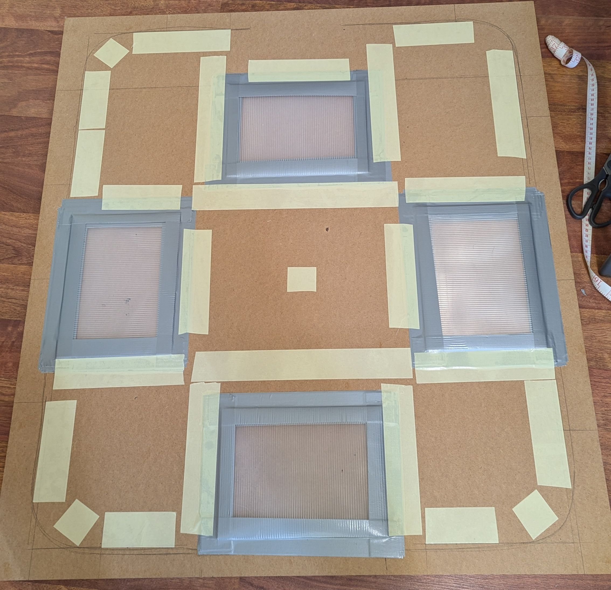
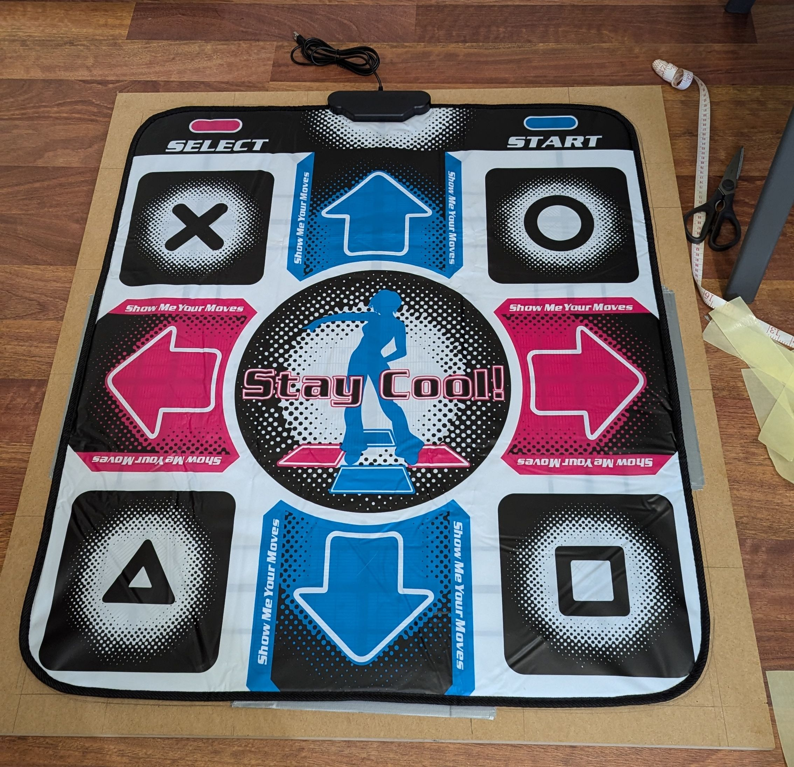
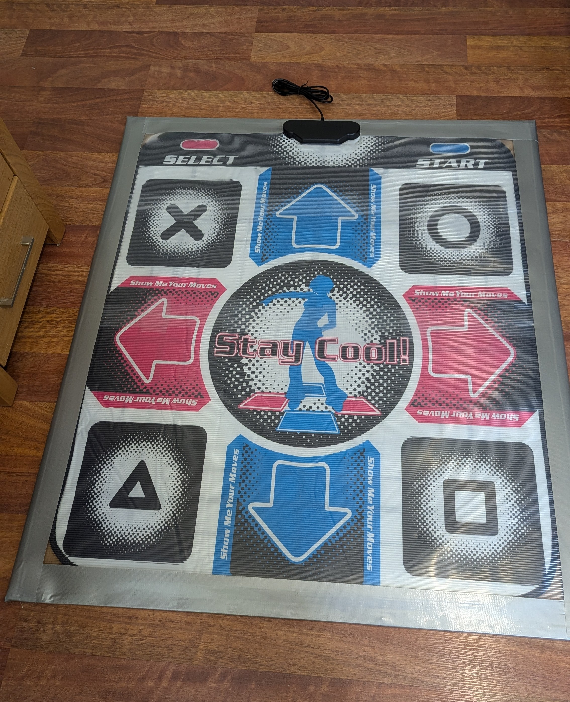

Based off of https://www.angelfire.com/pro2/softpadmod/ but its down under
1. Bunnings shopping list (not sponsored)
Note: try to go to a bunnings with the free timber cutting service.
- Wooden board: https://www.bunnings.com.au/16mm-mdf-panel-standard-1200-x-900mm_p0590041
- Get this cut to \(1000\times900\) mm
- 16mm plywood would also do, but it costs more
- Vinyl sheet \((\times2)\) https://www.bunnings.com.au/practa-clear-50x150cm-ribbed-kitchen-drawer-liner_p0374428
- Gaffa tape \((\times2)\) https://www.bunnings.com.au/bear-50mm-x-10m-black-multipurpose-gaffer-tape-black-10m_p1661575
- Both black and silver look good, also any brand of gaffa/duct tape will do - it'll need to go around the whole board twice (8m) and be enough for the bumps. 20m was just enough for thick (3 layer) bumps
- About 8m of double sided tape (any brand will do) https://www.bunnings.com.au/gorilla-7-3m-double-sided-tape_p0519511
- About 2m of clear packing tape (any brand will do) https://www.bunnings.com.au/wrap-move-48mm-x-50m-clear-heavy-duty-packing-tape-3-pack_p2610098
- Pinch your mates staple gun if you don't have one - I used this https://www.bunnings.com.au/trojan-3-in-1-heavy-duty-staple-gun-set_p0217503
1.1. Cost breakdown (as of Sept 2024)
| Component | Qty | Unit cost | Cost |
|---|---|---|---|
| Soft pad | 1 | 27.49 | 27.49 |
| Wooden board | 1 | 41 | 41 |
| Vinyl sheet | 2 | 5 | 10 |
| Gaffa tape | 2 | 6.99 | 13.98 |
| Double sided tape | 1 | 14.98 | 14.98 |
| Packing tape | 1 | 7 | 7 |
| 114.45 |
It's not cheap but its less than half of the cost of shipping an LTEK
2. Construction
Follow Angelfire's blog now that you have all the materials. I found that it was the easiest to tape the 2 vinyl sheets together on the long edge, wrap it around the top of the board then trim off the remaining ~50cm. I ended up with two \(50\times57\) cm pieces, which could then be cut into four sets of three \(25\times19\) cm bumps



That's it, stay cool
3. Bonus
The USB cord on the soft pad has so little copper in it I can't believe it's conductive at all. I've had two break on me already so protip: buy one of these cheapy Officeworks mice and chop off its cable, then unscrew the black case on the ddr mat, desolder the dodgy cable and solder in the officeworks one. If you have trouble with this ping me on twitter or something, I have suffered the pain.